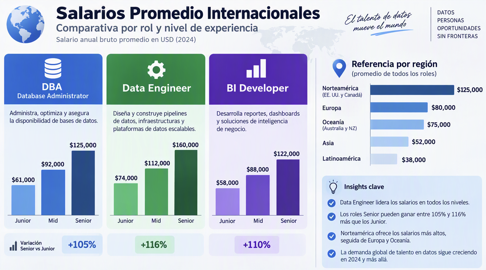
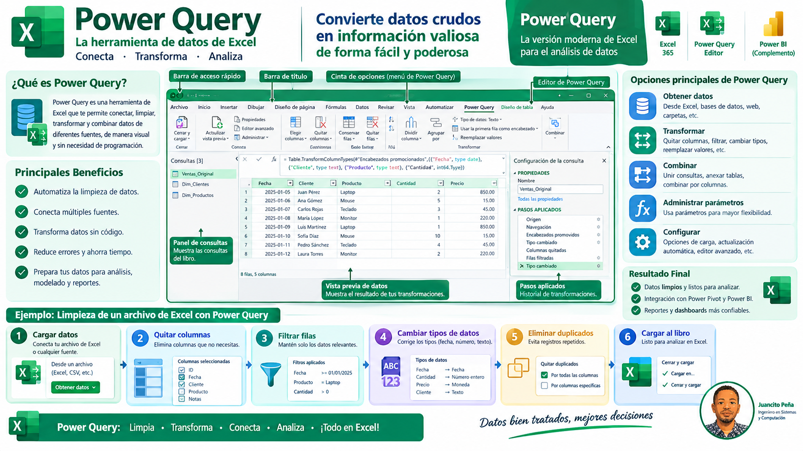
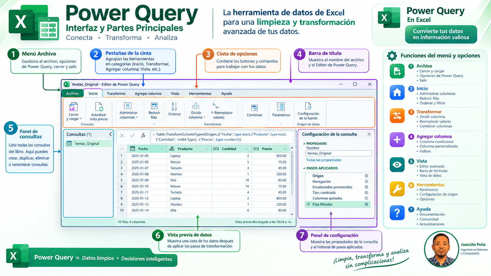
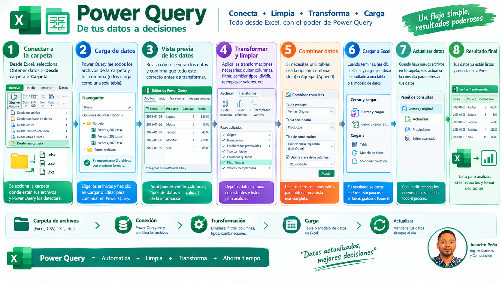

Microsoft Excel: El Motor Universal Indiscutible del Procesamiento & Análisis de Datos
de las empresas Fortune 500 consolidan y validan sus modelos financieros estratégicos en Excel.
Desde su creación por Microsoft, Excel se ha consolidado como el software de productividad y cálculo más influyente de la historia digital. No existe industria, laboratorio científico, banco de inversión ni departamento corporativo en la Tierra que no dependa de su cuadrícula reactiva. Su verdadera genialidad reside en su capacidad para actuar como una hoja de cálculo intuitiva para un principiante y, simultáneamente, como un motor de analítica avanzada in-memory, modelado relacional y orquestación de datos a escala empresarial.
Cuadrícula Reactiva Instantánea
Cálculo atómico e interactivo. Cualquier cambio en un parámetro recalcula millones de celdas dependientes en milisegundos con fluidez táctil inigualable.
Power Query & Motor M Integrado
La joya de la corona ETL. Conecta carpetas completas, APIs y bases de datos, desinfectando y modelando millones de filas con un solo clic (Ctrl+Alt+F5).
Power Pivot & VertiPaq en Memoria
Supera el límite tradicional de filas. Modelo relacional columnar comprimido con lenguaje DAX para calcular agregaciones multidimensionales al vuelo.
Python Nativo & Fórmulas Dinámicas
Ejecuta librerías de Data Science (pandas, seaborn) en celdas con =PY(), junto a matrices derramadas y funciones avanzadas (LAMBDA, XLOOKUP).
4 Décadas de Evolución: La Historia y Versiones Revolucionarias de Microsoft Excel
Excel 1.0
Lanzamiento pionero con interfaz gráfica, menús desplegables y uso del mouse antes que existiera Windows comercial masivo.
Excel 2.0 a 5.0
Llega a Windows superando a Lotus 1-2-3. En 1993 revoluciona la automatización corporativa introduciendo VBA.
Excel 97 a 2003
La era dorada de las Pivot Tables, formato condicional, validación de datos y el estándar .xls (65,536 filas).
Excel 2007 & 2010
Cinta Ribbon, formato abierto .xlsx, expansión a 1,048,576 filas y nacimiento del motor columnar Power Pivot.
Excel 365 & Copilot
Integración nativa de Power Query, matrices dinámicas (XLOOKUP), Python nativo en celdas y Copilot AI.
Cómo la Inteligencia Artificial, el Protocolo MCP & los Agentes Llevan tus Habilidades al 100% de tu Potencial
Existe una falsa creencia de que la Inteligencia Artificial reemplazará a los analistas de Excel. La realidad corporativa es la contraria: la IA democratiza el poder de la ingeniería de datos en manos del usuario de negocio. Al combinar Microsoft Excel con Model Context Protocol (MCP) y Agentes y Subagentes Autónomos, tus habilidades técnicas y tu capacidad de resolución analítica alcanzan el 100% de su potencial máximo.
1. Inteligencia Artificial Cognitiva
Modelos avanzados que interpretan requerimientos en lenguaje natural y redactan al instante código M óptimo para Power Query, medidas analíticas DAX y fórmulas matriciales dinámicas sin errores sintácticos.
2. Protocolo MCP (Model Context Protocol)
El nuevo estándar abierto de la industria que conecta de forma atómica y bidireccional los asistentes de IA con tus libros de Excel, APIs y bases de datos. Los agentes leen esquemas de datos, validan calidad y ejecutan acciones seguras.
3. Agentes & Subagentes Autónomos
Equipos de subagentes especializados que operan en segundo plano: un agente curador desinfecta texto (leetspeak, espacios, nulos), un agente arquitecto diseña el modelo en estrella y un agente DevOps publica en GitHub Pages.
Del Espejismo de los Sistemas Transaccionales al Poder del Análisis Ágil en Excel & Power Query
Las organizaciones invierten presupuestos astronómicos en ERPs y CRMs gigantescos (SAP, Oracle, Dynamics 365, Salesforce, Odoo) bajo la promesa de resolverlo todo. Sin embargo, en el día a día de las decisiones ejecutivas, siempre terminas extrayendo a Excel, Power Query, Power BI, Python y R. ¿Por qué ocurre esto y cómo podemos blindar los datos para transformarlos en valor financiero medible?
Los 5 Roles Clave del Ecosistema de Datos: Diferencias, Responsabilidades & Herramientas
Entender con claridad qué hace cada especialista erradica la confusión entre la captura técnica y el análisis directivo.
Procesamiento de Datos
Ingestión transaccional, captura masiva y almacenamiento crudo en bases de datos (OLTP). Garantiza que cada clic o factura quede persistida sin pérdida de eventos.
Curador de Datos
El custodio de la calidad e higiene del dato. Identifica y erradica duplicados, depura caracteres invisibles, audita ortografía y establece diccionarios de metadatos.
Análisis de Datos (BI)
Transforma datos modelados en respuestas de negocio. Diseña KPIs, modelos en estrella, Tablas Dinámicas, Dashboards ejecutivos y explica el qué ocurrió y por qué.
Ingeniería de Datos
Arquitectura de tuberías a gran escala. Construye Data Warehouses, orquesta flujos ETL/ELT automatizados, asegura particionamiento y alta disponibilidad corporativa.
Científico de Datos
Modelado estadístico y Machine Learning avanzado. Pronostica demanda futura, segmenta clientes por clustering algorítmico y detecta fraudes o anomalías sutiles.
La Promesa de los ERPs/CRMs vs La Inevitable Realidad Analítica
Los Niveles de Seniority en Excel & Datos: De la Captura Transaccional al Arquitecto de IA
El mercado laboral global ya no premia a quien solo escribe fórmulas en una celda. Hoy el valor estratégico, la empleabilidad y las remuneraciones más altas pertenecen a quienes combinan Excel 365, Power Query, modelado relacional y habilidades avanzadas en Inteligencia Artificial (Copilot, Prompting M/DAX, Protocolo MCP y Agentes Autónomos).
1. Procesador de Datos (Data Entry)
Capturista & Transcriptor Manual
Digita información en celdas, copia y pega reportes mensuales, aplica filtros simples y fórmulas básicas (=SUMA, =PROMEDIO). Alto riesgo de introducir errores tipográficos y dobles espacios.
2. Técnico de Datos & Conciliador
Resolución de Discrepancias
Utiliza fórmulas condicionales (=BUSCARV, =SI.ERROR), macros grabadas y formato condicional. Consolida discrepancias de facturación e inventario pero sigue dependiendo de pasos manuales.
3. Curador de Datos & Especialista ETL
Ingeniería de Limpieza con Power Query
Domina el motor Power Query y lenguaje M. Conecta carpetas masivas, erradica leetspeak, espacios fantasma y tipa datos estrictamente. Actualiza todo el pipeline con Ctrl+Alt+F5 en segundos.
4. Analista de Inteligencia de Negocios (BI)
Modelado Dimensional & Tablas Dinámicas
Construye modelos en estrella con Power Pivot, medidas analíticas explícitas con lenguaje DAX, Slicers interactivos de Excel 365 y Dashboards para la toma de decisiones financieras y comerciales de nivel directivo.
5. Científico de Datos en Excel
Modelado Estadístico & Python Nativo
Integra Python nativo (=PY()) con librerías pandas, scikit-learn y seaborn. Ejecuta clustering, regresiones, pronósticos estocásticos y análisis de propensión directo en la cuadrícula.
6. Arquitecto de Datos, IA & Protocolo MCP
Orquestación Multi-Agente & Liderazgo 100%
El perfil más cotizado del mercado global. Orquesta Agentes y Subagentes de IA, implementa Model Context Protocol (MCP) para conectar LLMs con hojas de cálculo y bases de datos, y audita la gobernanza empresarial al 100% de su potencial.
Tabla Salarial Comparativa por Nivel de Seniority, Región Geográfica y Skills en IA
| Rol & Seniority | Dominio de Excel & Herramientas | Habilidades en IA & MCP | LATAM / RD (USD/año) | Estados Unidos (USD/año) | Europa / España (EUR/año) | Demanda Laboral |
|---|---|---|---|---|---|---|
| ⌨️ 1. Data Entry / Capturista | Básico (Celdas, Suma, Filtros) | Sin IA | $4,800 – $7,200 | $32,000 – $40,000 | €18,000 – €24,000 | -18% (Decreciente) |
| 🔧 2. Técnico de Soporte | Intermedio (BUSCARV, SI condicional) | IA básica conversacional | $8,400 – $13,200 | $45,000 – $58,000 | €26,000 – €34,000 | +5% (Estable) |
| 🧹 3. Curador ETL (Power Query) | Avanzado (Power Query, Lenguaje M) | Generación de pipelines con IA | $15,600 – $24,000 | $70,000 – $92,000 | €42,000 – €56,000 | +28% (Alta) |
| 📈 4. Analista BI & Modelado | Experto (DAX, VertiPaq, Slicers, Dashboards) | Copilot & Storytelling de Datos | $22,000 – $36,000 | $90,000 – $120,000 | €52,000 – €72,000 | +42% (Muy Alta) |
| 🔬 5. Científico de Datos | Python en Excel (=PY()), Machine Learning | Modelos predictivos & Generativa | $28,000 – $48,000 | $125,000 – $160,000 | €68,000 – €95,000 | +48% (Exponencial) |
| 🧠 6. Arquitecto IA & Protocolo MCP | Maestría Total (Excel, Fabric, SQL, APIs) | Orquestación Multi-Agente & MCP | $45,000 – $75,000+ | $160,000 – $225,000+ | €95,000 – €140,000+ | +65% (Liderazgo Global) |
Fuentes de Investigación Salarial: Glassdoor Economic Research 2026, LinkedIn Workforce & AI Talent Index, Michael Page Salary Guide y CompTIA State of Tech Workforce.
Comparativa Salarial: Tradicional vs Skills en IA & Power Query
USD/añoProyección de Crecimiento en Contrataciones Anuales
% VariaciónLos especialistas en Excel que integran Inteligencia Artificial generativa, Copilot y Protocolo MCP perciben entre un 45% y un 75% más de salario frente a quienes solo conocen fórmulas estáticas tradicionales.
El dominio de Power Query ahorra un promedio de 25 horas al mes en conciliaciones manuales. Ese tiempo liberado permite migrar de un puesto de soporte a un rol de análisis financiero estratégico.
La IA no reemplaza al analista de datos; reemplaza a quien no usa IA. Quien actúa como Arquitecto de Soluciones dirigiendo agentes inteligentes se convierte en un activo imprescindible para cualquier corporación.
Mapa Jerárquico de Seniority, Competencias Técnicas & Ecosistema de Datos

Figura 1.0: Jerarquía de madurez técnica, impacto en el negocio y proyección salarial en el ecosistema integrado de Microsoft Excel 365, Power Query, Power BI e Inteligencia Artificial Agéntica.
Tabla Comparativa de Tiempos: Consolidación y Limpieza de 12 Archivos Mensuales
Evaluación para un volumen anual recurrente de 30,000 registros comerciales distribuidos en 12 archivos de texto o Excel.
| Fase del Flujo Operativo | Novato (Manual Celda a Celda) | Usuario Medio (Fórmulas / Macros) | Power Query Automatizado |
|---|---|---|---|
| 1. Apertura, copiado y pegado de 12 archivos | 60 minutos | 20 minutos | 0 seg (Folder Connector) |
| 2. Recorte de espacios y caracteres invisibles | 90 minutos (Buscar/Reemplazar) | 35 minutos (=ESPACIOS / =LIMPIAR) | 0 seg (Text.Trim grabado) |
| 3. Aislamiento de Códigos de Cliente / ID | 50 minutos (Texto en columnas) | 30 minutos (=EXTRAE / =HALLAR) | 0 seg (Splitter Delimitador) |
| 4. Reparación de Fechas fusionadas con Horas | 75 minutos (Errores de parseo) | 40 minutos (=VALOR / =FECHA) | 0 seg (type date automático) |
| 5. Tratamiento de Nulos y Celdas Vacías | 45 minutos (Filtrar y tipear) | 25 minutos (=SI.ERROR / =SI) | 0 seg (ReplaceValue) |
| 6. Actualización de Tablas Dinámicas y Gráficos | 60 minutos (Reajustar rangos) | 15 minutos | 2 segundos (Ctrl + Alt + F5) |
| TIEMPO TOTAL INVERTIDO | 6.3 Horas | 2.7 Horas | < 3 Segundos |
| Riesgo de Corrupción de Datos | Crítico (80% error humano) | Medio (Fórmulas rotas) | 0% (Inmutable) |
Master ETL: Conexión, Limpieza & Cálculos con Columnas Personalizadas
Paso a paso definitivo para conectarte a diferentes fuentes, purificar datos basura 🗑️ y construir tus métricas financieras directamente en Power Query con columnas calculadas listas para Tablas Dinámicas y KPIs.
Flujo Maestro de Datos en Power Query: Conexión, Limpieza & Modelado
Visualiza las infografías de alta resolución del flujo completo. Haz clic sobre cualquier tarjeta para abrirla al 95% de la pantalla.

Conexión a Fuentes & Folder Connector
Ingestión directa desde carpetas de red, archivos CSV y APIs con refresco automático de por vida en un clic (Ctrl+Alt+F5).

Limpieza de Espacios & Leetspeak
Desinfección de texto con Text.Trim, reparación de corrupciones @/4/3/0 y tipado estricto de fechas y números.

Columnas Calculadas & Modelo
Construcción de métricas financieras (Margen, Subtotales, ITBIS) y carga en memoria VertiPaq para alimentar Tablas Dinámicas y KPIs.
Conexión a Fuentes de Datos 🌐
Abre Excel o Power BI → Pestaña Datos (u Obtener Datos)
Crea una carpeta en tu equipo (ej. Datos_Empresa) y guarda tus archivos ahí.
1. Ve a Obtener Datos → Desde una carpeta.
2. Selecciona la carpeta y presiona Abrir.
3. Clic en el botón desplegable: "Combinar y Transformar Datos".
Para extraer un reporte plano individual exportado desde tu sistema o base de datos.
1. Ve a Obtener Datos → Texto/CSV.
2. Busca tu archivo en el disco.
3. El sistema detectará el delimitador (Coma para CSV, Tabulador para TXT).
4. Haz clic directo en "Transformar Datos".
Para archivos anidados o respuestas de servicios web en la nube.
1. Ve a Obtener Datos → JSON.
2. Power Query lo cargará como un registro o lista.
3. Haz clic en el botón "A la tabla" en la cinta.
4. Usa el icono de las dos flechas (Expandir) en la cabecera para revelar todos los campos.
Limpiar Espacios Fantasmas 👻 (Recortar y Limpiar)
Transformar → Formato → Recortar / Limpiar
¿Por qué se hace?: Los espacios en blanco arruinan los filtros y tablas dinámicas. Un filtro verá
"Nacional" y " Nacional " como dos clientes totalmente distintos.
1. Ve a la pestaña superior Transformar.
2. Clic en el botón Formato → Recortar (Elimina espacios accidentales al inicio y final de la palabra).
3. Clic nuevamente en Formato → Limpiar (Elimina saltos de línea ocultos y caracteres de control invisibles).
1. Haz clic derecho sobre el encabezado de la columna y elige Reemplazar los valores...
2. En "Valor que buscar" pulsa dos veces la barra espaciadora (" ").
3. En "Reemplazar con" pulsa un solo espacio (" ") y presiona Aceptar.
Reparar Caracteres Corruptos 🛠️ (Reemplazar)
Clic Derecho en la Cabecera → Reemplazar los Valores
Paso a paso: Selecciona la columna de texto sucia (ej: CLIENTE o PRODUCTO), haz clic derecho sobre su título y elige Reemplazar los valores... Ejecuta la siguiente secuencia de sanación:
↓
Reemplazar: a
↓
Reemplazar: a
↓
Reemplazar: e
↓
Reemplazar: o
↓
Reemplazar: (vacío)
↓
Reemplazar: (vacío)
Normalización y Tipos de Datos 🎯 (El Toque Final)
Transformar → Poner En Mayúsculas Cada Palabra → Tipado Estricto
Selecciona tus columnas de texto (CLIENTE, VENDEDOR, PRODUCTO). Ve a:
Esto unifica "juan perez" y "JUAN PEREZ" a "Juan Perez" automáticamente.
Haz clic en el pequeño icono ABC/123 al lado del nombre de cada cabecera:
Hoja de Ruta en Power Query: Cálculos con Columnas Personalizadas 💡
Cálculos directos sobre nuestros datos reales • Cero Fórmulas DAX • Listos para Tablas Dinámicas y Cards
Sigue estos pasos para crear las columnas calculadas que alimentarán tus tarjetas de KPI y el área de Valores de la Tabla Dinámica. En Power Query, ve a la pestaña: Agregar columna → Columna personalizada
Columna: Subtotal Calculado ($)
Paso a paso: Multiplicaremos la cantidad de unidades vendidas por el precio unitario del producto para asegurar el subtotal antes de impuestos.
Columna: Margen Bruto de Ganancia ($)
Paso a paso: Restamos el costo total al subtotal de la venta para conocer la ganancia monetaria neta de cada transacción.
Columna: Total Factura con Impuestos (ITBIS 18%)
Paso a paso: Sumamos el impuesto de ley del 18% al subtotal de la factura para conocer el monto exigible al cliente.
Columna: Ingreso Real Efectivo (Excluyendo Cancelaciones)
Paso a paso: Si la factura tiene estatus "Cancelado", no ingresó dinero a la empresa; su aporte real debe ser 0.
Columna: % de Margen sobre Venta
Paso a paso: Calcularemos el porcentaje de rendimiento protegiendo la operación contra división por cero si una venta es 0.
6. Cerrar y Cargar: La Mejor Opción de Rendimiento 🚀
Tu trabajo queda guardado e inmune a errores manuales1. Ve a la pestaña Inicio → Cerrar y Cargar en...
2. Selecciona Crear únicamente la conexión y marca Agregar al Modelo de Datos.
3. ¡Cero hojas congeladas! Tu libro pesará megabytes mínimos y podrás armar Tablas Dinámicas al instante.
Cuando llegue el archivo del próximo mes o semana, ¡no repitas nada!
1. Cópialo dentro de la carpeta que configuraste en el Paso 1.
2. Abre tu Excel y pulsa Ctrl + Alt + F5 (Actualizar Todo).
3. Todo se recalcula automáticamente en 2 segundos.
Laboratorio de Datos: 5 Sectores Empresariales Reales
Selecciona cualquier industria. El modelo generará el catálogo, las dependencias regionales y las impurezas típicas de ese sector para tus prácticas ETL.
Auditoría de Datos Crudos de la Industria (Muestra en Vivo)
15 de 1,000 registrosDashboard Ejecutivo Multidimensional
Métricas adaptadas en tiempo real para el sector: Supermercado & Retail.
Comparativa por Región
Ingresos vs Costos
Mix de Participación
Distribución por Categoría
Tendencia Cronológica Mensual
Facturación Bruta vs Real Efectiva
Ranking de Ejecución
Top Responsables / Agentes
Muestra de Datos Crudos en Vivo del Dashboard Supermercado
Filas activas respondiendo en tiempo real al caso de empresa y a los segmentadores.
Manual Maestro Ilustrado de Tablas Dinámicas (PivotTables) en Microsoft Excel 365
Aprende a dominar la herramienta analítica más potente del mundo empresarial. Basado en el estándar pedagógico de Envato Tuts+ y modelado al 100% sobre nuestro Dataset de Ventas de Supermercado & Retail Masivo (Facturas, Clientes, Categorías, Unidades, ITBIS y Margen Bruto), sin escribir fórmulas complejas.
Resume 50,000 transacciones de supermercado en un reporte de rentabilidad cruzada en menos de 10 segundos.
Cruza filas (Vendedores) con columnas (Categorías) y obtén subtotales automáticos sin romper la hoja.
Alterna entre Suma de Ventas, Margen Bruto, Promedio por Ticket o % de Participación con un solo clic derecho.
Agrupa fechas de ventas de supermercado en Años, Trimestres y Meses automáticamente sin fórmulas de fecha.
Ingresas 500 facturas nuevas y con Alt + F5 todo el reporte gerencial se recalcula solo.
Modelado 3D de las Partes de la Tabla Dinámica para el Supermercado
Entiende el flujo espacial de cómo los datos crudos se transforman a través de la Lista de Campos y los 4 Cuadrantes.
Dataset de Ventas Supermercado
Datos transaccionales normalizados por Power Query: cada fila es una transacción con factura, fecha, cliente, categoría, producto, total facturado y margen.
La Anatomía de Arrastre de Excel
El corazón de la tabla dinámica. Distribuyes los campos del supermercado en los 4 cuadrantes espaciales:
Matriz Gerencial Resultante
La tabla compacta multidimensional: muestra ventas y margen agrupadas por vendedor en filas y categoría en columnas con totales generales calculados.
Tutorial Guiado: Cómo Crear y Analizar Ventas de Supermercado con Tablas Dinámicas
Sigue estos 8 pasos fundamentales para replicar esta arquitectura analítica en cualquier versión de Microsoft Excel.
Paso 1: Higiene & Preparación de los Datos del Supermercado
Regla de Oro Tuts+Antes de insertar la tabla dinámica, la fuente de datos debe cumplir con 4 mandamientos rigurosos:
- Fila de Encabezados Únicos: Sin celdas fusionadas.
- Sin Filas Vacías: Registros continuos de facturas.
- Tipado Homogéneo: Fechas como fecha, montos en moneda.
- Tabla Oficial (Ctrl + T): Convierte el rango en Tabla de Excel.
Paso 2: Inserción de la Tabla Dinámica desde la Cinta de Opciones
Alt + N + VHaz clic en cualquier celda dentro de la tabla de supermercado. Ve a la pestaña Insertar → Tabla Dinámica (o utiliza el atajo de teclado en español Alt + B + T / en inglés Alt + N + V). En el cuadro de diálogo emergente, selecciona Nueva hoja de cálculo para mantener la presentación limpia y aislada.
Paso 3: Anatomía del Panel de Campos (PivotTable Field List)
Panel LateralAparecerá a la derecha de Excel el panel lateral con la lista de campos de ventas del supermercado arriba y los cuatro cuadrantes estratégicos abajo:
Paso 4: Arrastrar los Campos Clave del Supermercado
Drag & DropPara responder la pregunta ejecutiva: "¿Cuánto factura y qué margen genera cada vendedor en cada categoría de supermercado?", arrastra los siguientes campos:
Paso 5: Configuración de Campo de Valor & Formato Moneda
Value Field Settings
Por defecto, Excel puede mostrar números sin formato (ej. 145820.3). Para presentarlo con elegancia gerencial:
1. Formato de Moneda: Haz clic derecho sobre cualquier número → Formato de número... → Moneda → Símbolo RD$ con separador de miles y 0 decimales.
2. Mostrar Valores Como %: En otra columna de valores, haz clic derecho → Mostrar valores como → % del total general para ver la cuota de mercado de cada vendedor de supermercado sin escribir fórmulas.
Paso 6: Agrupación de Fechas de Ventas por Meses y Trimestres
Time Intelligence
Si arrastras el campo [FECHA_VENTA] a las columnas, Excel mostrará cientos de días individuales. Para agruparlos: haz clic derecho sobre cualquier celda de fecha en la tabla dinámica → Agrupar... → Selecciona simultáneamente Meses y Años. Excel creará al vuelo una jerarquía de calendario sin modificar los datos de origen.
Paso 7: Diseño en Formato Tabular (Estilo TutsPlus Recomendado)
Diseño TabularPor defecto, Excel utiliza el Formato Compacto. Para convertir la tabla dinámica en un informe profesional limpio para juntas directivas:
Ve a la cinta Diseño → Diseño de informe → Mostrar en formato tabular. Esto separa cada campo en su propia columna independiente con encabezados claros y habilita la opción de Repetir todas las etiquetas de elementos para exportar limpiamente a Power BI o Python.
Paso 8: Segmentadores (Slicers), Gráficos Dinámicos & Actualización
Alt + F5El toque final corporativo:
- • Insertar Segmentación de Datos (Slicers): Cinta Analizar tabla dinámica → Insertar segmentación de datos → Seleccionar [CANAL_VENTA] y [CONDICION_PAGO].
- • Gráfico Dinámico (PivotChart): Inserta un gráfico de columnas agrupadas vinculado; cualquier filtro en la tabla actualizará el gráfico de inmediato.
- • Actualizar Datos (Refresh): Cuando agregues nuevas facturas de supermercado a la fuente, pulsa Alt + F5 o Ctrl + Alt + F5 para reflejar los cambios en 1 segundo.